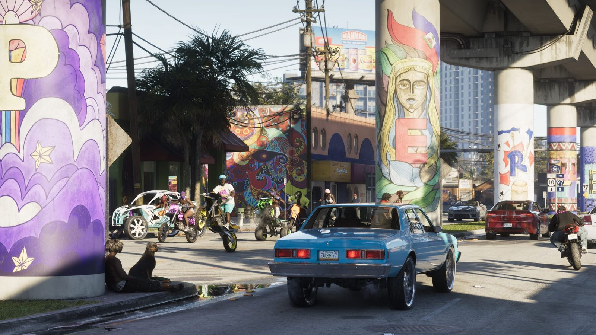

Is GTA 6 coming to PC?

Not at launch. GTA 6 launches 19 November 2026 on PS5 and Xbox Series X|S only. Rockstar has not announced a PC version, a PC release date, or PC system requirements. Not announced
No
PC at launch
Not announced
PC release date
Q1 2027
Reported window
PS5 · Xbox Series X|S
Launch platforms
What is reported (not confirmed)
Reported GamesBeat reported on 13 October 2026 that Rockstar is targeting the first quarter of 2027 (January–March) for a PC release, citing anonymous industry sources. Rockstar has not confirmed this window, and the studio has already delayed GTA 6 twice — treat Q1 2027 as a report, not a promise.
What Rockstar has actually said
- The official GTA VI page lists only PlayStation 5 and Xbox Series X|S.
- No PC pre-order, PC preload or PC specifications have been published.
- Historically, GTA V reached PC about a year and a half after its console launch — a pattern, not a commitment.
Scam warning: any site selling a "GTA 6 PC pre-order" or offering a PC download today is fake. There is no PC version to buy or download yet.
What to do if you only have a PC
- Wait for an official Rockstar announcement — this page is updated the day one lands.
- Or play at launch on a PS5 / Xbox Series X|S (borrowed, rented, or at a gaming lounge).
Sources: Rockstar Games official GTA VI page (platforms); GamesBeat, 13 October 2026 (reported PC window). Checked 18 November 2026.